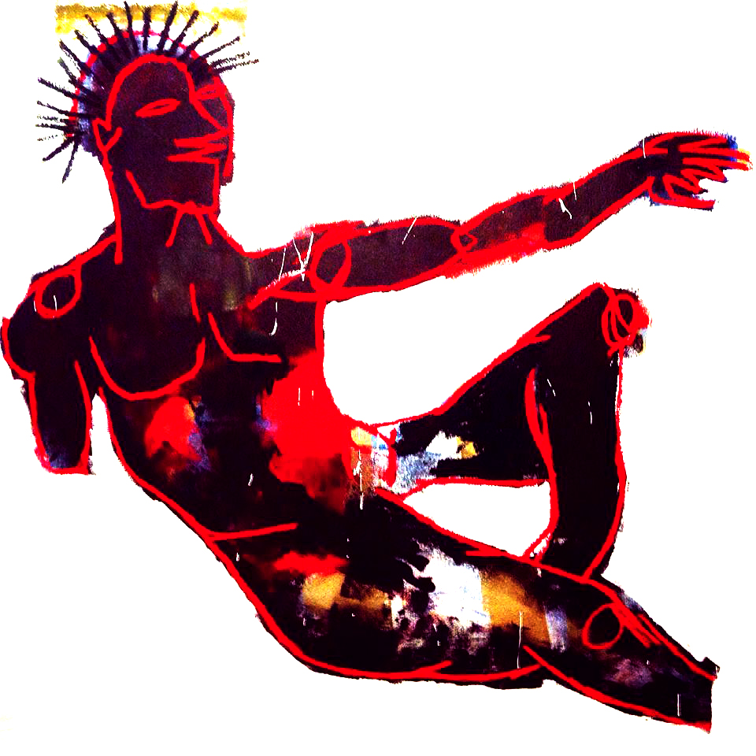

Olivier & Edo
Olivier Jean-Daniel Souffrant is a portrait of an artist as a young man. If you were to pluck Olivier from modern times and send him back in time to 1920’s Harlem, he would fit right in. Surely his work is inspired by Basquiat, but not in the way most people would think. The homage to Basquiat is not an allusion, but an honest snapshot of the inner workings of his mind translated on the canvas, whether it be it a fleeting thought, a word, color block, or a sketch or doodle. There’s a certain raw element in his approach to his work that you can see in his stroke and in the way that he interacts with the canvas. It’s finished, yet a work in progress. It’s what happens when minimalism meets collage, and when an old soul lives in modern times.

amfm: How did you get into making art, was it something you have always done or wanted to do? What were some of your earliest art memories?
olivier: Growing up, my dad was an artist and an illustrator at some point, and my brother drew and sketched constantly. Early on, I got inspired by him and started copying the things he would draw. Coming home from work, my mom would also bring me Disney coloring books, paper and crayons. I didn’t really take art seriously at first, but when I understood its importance, and how it can significantly impact the way we understand things in our society, I took it seriously.
amfm: You have a very distinct style and incorporate text, images, scribbles and work colorfully, what are some of your themes you like to explore in your work and why are they of importance to you?
olivier: I like facts and history. I try to incorporate those as much as possible in my paintings and drawings. I ultimately want to leave a body of work that is appreciated in our contemporary time, but also a body of work that the next generations will be able to look at and feel a certain level of connection to.
amfm: Your work seems to reminiscent of this past renaissance period for black art, and in Chicago it feels we are seeing this rise of black creatives. How has this renaissance, Chicago, and your life as a black male influenced you as an artist and your work?
olivier: Yes, I feel like there is a creative renaissance going on in Chicago. There’s always something buzzing during the weekends whether it’s an art show, listening party, or local fashion show there’s always something going on. So I’m always surrounded by a constant stream of creative energy, and capturing the mood of some of those events, and putting them on canvas or on a paper. I also get inspired a lot by my Caribbean roots. Being black is hard in the States, it’s always been hard. It’s even harder I feel being a black creative in this country.
|
 |
 |

1 | 2
For more from Edo & Olivier:
Olivier's Instagram
Edo's Website
Edo's Instagram
photo credits: justin dwuan redding
styling: ryan alexander / clothes courtesy of maybe sunday